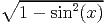

![[1 + -1- + -1-+ ⋅⋅⋅ + 1 + 1]
x x- 1 x- 2 2](fussy15x.png) . The
term in the parenthesis is also written as a recursive function df(x). It is shown that the
propagated error in f(x) is equal to f(x)df(x)δx.
. The
term in the parenthesis is also written as a recursive function df(x). It is shown that the
propagated error in f(x) is equal to f(x)df(x)δx.
Following are some examples to demonstrate as well as test the correctness of the error propagation algorithm of Section 3. In the following examples, various functions are written in different algebraic forms and the results for the different forms is shown to be exactly same (e.g. cos(x) vs. , tan(x) vs. sin(x)∕ cos(x)). These examples also verify that the combination of a function and its inverse simply returns the argument (e.g asin(sin(x)) = x), as well as functions like sinh(x)∕((exp(x) - exp(-x))∕2) (which is really a complicated way of writing 1!) returns a value of 1 with no error. However, if the values of two independent variates x1 and x2 and their corresponding errors are same, the value of expressions like sin 2(x 1) + cos 2(x 2) will be 1 but the error will not be zero.
Following is an example of error propagation in a recursive function. The factorial of x is written
as a recursive function f(x). Its derivative is given by f(x). The
term in the parenthesis is also written as a recursive function df(x). It is shown that the
propagated error in f(x) is equal to f(x)df(x)δx.
Similarly, the recurrence relations for the Laguerre polynomial of order n and its derivative evaluated at x are given by
![(
{ 1 n = 0
L (x ) = 1 - x n = 1 (5)
n ( (2n--1-x)Ln-1(x)--(n--1)Ln-2(x)
n n ≥ 2
L′n (x ) = (n∕x) [Ln (x) - Ln-1(x )] (6)](fussy16x.png)